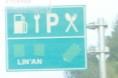

| Restaurant Ahead | BACK TO DATE PAGE | |||||||||
|  | ||||||||||
| This sign on the highway still tickles me whenever I see it. I guess they're using the crossed fork and spoon on the top right as an international symbol for food being available. But I'll bet you'd have to look long and hard to actually find anything other than chopsticks. | ||||||||||
| BACK TO DATE PAGE | ||||||||||
| And see that 'P' for parking. Amazing people. | ||||||||||